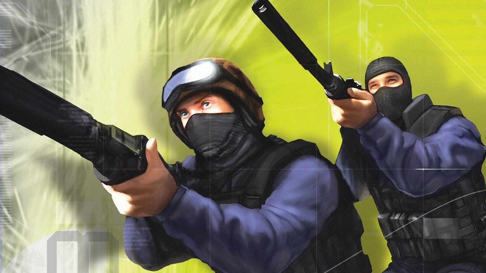
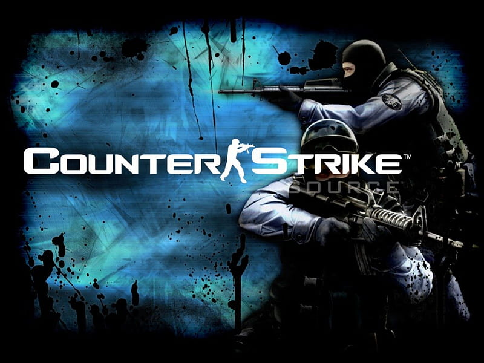
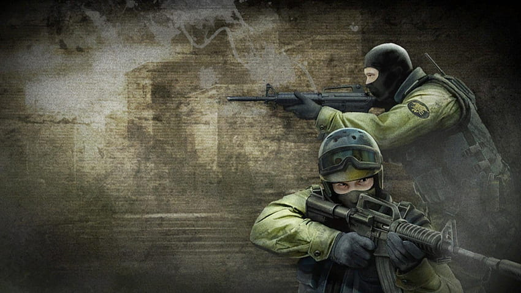
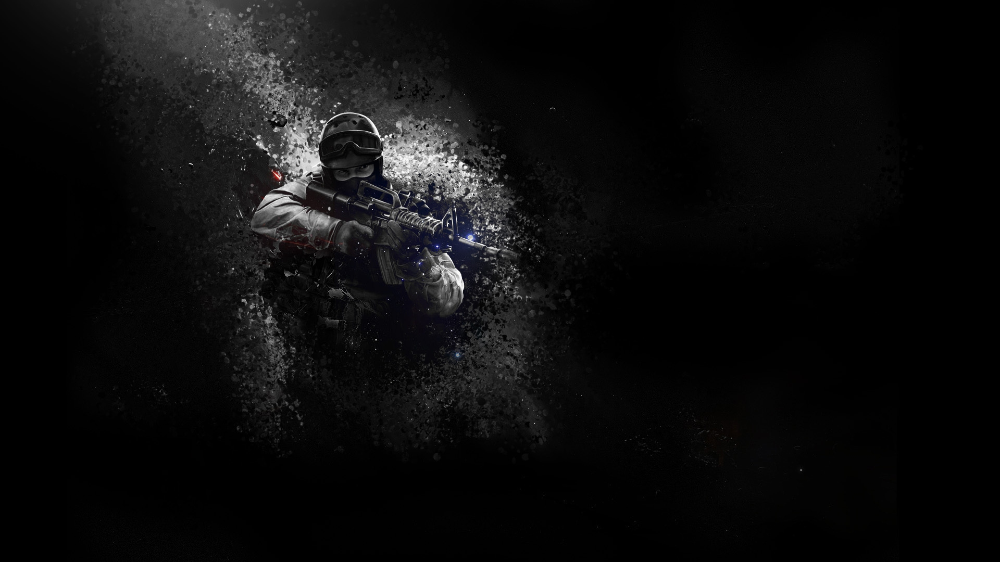

Counter-Strike 1.6

About the game
Download Counter Strike 1.6 is one of the most popular and influential first-person shooter games ever created. CS 1.6 was
initially released for Half-Life in 1999. It soon became a huge success, gaining a passionate fanbase. Multiple sequels and
spinoffs were created in response to its success.
Gameplay
Download Counter Strike 1.6 is a multiplayer first-person shooter game. It pits two teams of players against each other: terrorists and counter-terrorists.
The game is played in rounds, with each round lasting up to two minutes. The objective of the game depends on the game mode.
Generally, one team tries to plant a bomb or defend hostages. The opponents are attempting to prevent the detonation of the bomb and rescue the people who have been taken hostage.
Players start each round with a limited amount of money, which can be used to purchase weapons, equipment, and other items. The amount of money earned in each round depends on how well the player performed in the previous round. In addition to money earned from winning rounds, players can also earn money by completing objectives.
One of the key features of CS 1.6 is its emphasis on teamwork and communication. Players must collaborate to reach their goals. Players can communicate with each other using in-game voice chat or text chat.
The game includes a wide variety of weapons, including pistols, shotguns, rifles, and grenades. Weapons have different strengths and weaknesses. To succeed, players must learn how to use them effectively. For example, pistols are generally less powerful than rifles, but they are also faster and more accurate at close range.
CS 1.6 includes a single-player campaign mode. In this mode, players can practice against bots in various scenarios. Multiplayer modes are also included.
This mode is helpful for new players. It allows them to learn the basics of the game. Once they have a better understanding, they can move on to the more competitive multiplayer modes.
Game Modes
There are numerous game modes available in Counter Strike 1.6, each of which has its own rules and goals. Some of the most popular game modes include:
- In Bomb Defusal mode, terrorists must plant a bomb at one of two designated locations. Counter-terrorists must stop the bomb from being detonated. If it has already been put in place, they must take action to deactivate it.
- Hostage Rescue: In this mode, the counter-terrorists must rescue hostages from the terrorists. The terrorists can use the hostages as human shields, making the rescue mission more challenging.
- Assassination is a game mode. One player is designated as a VIP. The objective is to escort this VIP to a safe location. The opposing team attempts to kill the VIP.
- Team Deathmatch is a mode where two teams compete. The aim is to get the most kills in the given time limit.
- Capture the Flag is a mode of play. Each team has a flag to defend. The goal is to capture the other team’s flag and return it to their own base.
Graphics and sound
- Counter Strike 1.6 was released in 2000. Its graphics and sound design were state-of-the-art for the time. However, these features may seem outdated by today’s standards.
- The game has intricate 3D visuals with a range of scenarios, including cities, business parks, and nature settings. The game’s sound effects are highly realistic. Weapon sounds and ambient noises are accurate. This helps players to become immersed in the game’s world.
- Counter-Strike 1.6 has an advantage with its basic visuals. It can be used on many different PCs, even those that are older or not as powerful. This has helped keep the game accessible to a wide audience. It has been more than two decades since its initial release.
FEATURES
- Release date November 18, 2013 (cs 1.6 full)
- cs 1.6 setup 256MB size
- 100% clean rip from Steam GCFs (Game cache files)
- Includes latest Counter Strike bots
- Half-Life Single/Multiplayer is also included
- Dual Protocol (48 + 47) Client
- Client can join P47 as well as P48 servers
- Dual Protocol (48 + 47) Dedicated Server is also included
- Working Dedicated and Listen server (Steam and non-Steam)
- Working server browser with Internet, Favorite and LAN tabs
- Full protection against all types of slow hacking servers
- Compatible with latest sXe Injected anticheat
- Include latest Metamod-P v1.21p37
- Include latest AMX Mod X v1.8.2 (disabled by default)
- HLTV is also included and works
- Engine version (1.1.2.6 build 4554)
- Playable on Internet and LAN
- Can be used as Portable
- In game ads are removed

SYSTEM REQUIREMENTS
| MINIMUM |
RECOMMENDED |
| 500 mhz processor |
800 mhz processor |
| 96mb ram |
128mb ram |
| 16mb video card |
32mb video card |
| Windows XP |
Windows XP |
| Mouse |
Mouse |
| Keyboard |
Keyboard |
| Internet Connection |
Internet Connection |
Download Counter Strike 1.6
Download <-- Torrent file
Counter-Strike Source

About the game
Download counter strike source (CSS) is a first-person shooter game that was developed by Valve Corporation and released in 2004. It is the third game in the Counter-Strike series and is the successor to Counter-Strike 1.6. One of the most
well-known online multiplayer first-person shooter games is CSS, which is a multiplayer game.
Gameplay
The gameplay of Counter-Strike: Source is very similar to that of Counter-Strike 1.6.
It is a team-based game where players take on the role of either a terrorist or a counter-terrorist.
The objective of the game depends on the game mode being played, which include bomb defusal and hostage rescue.
The game is played in rounds, and each round lasts for a certain amount of time.
At the beginning of each round, players can purchase weapons and equipment using money that they have earned from previous rounds.
CSS features a variety of weapons, including pistols, submachine guns, shotguns, assault rifles, and sniper rifles.
In addition to weapons, players can purchase equipment such as grenades, kevlar vests, and helmets.
Counter-Strike: Source also features a variety of maps, each with its own unique layout and design.
Some maps are designed for bomb defusal, while others are designed for hostage rescue.
One of the key features of CSS is its physics engine, which allows for realistic physics and ragdoll effects.
In other words, when a player dies, their body will fall to the ground and respond to its surroundings.
The physics engine also supports destructible environments, enabling players to destroy barriers and other fixtures to forge new passageways or hide.
CSS also includes a number of custom options, including custom skins for weapons and players, custom maps, and custom game modes.
There are also a number of community servers that offer unique game modes and features.
Conclusion: Counter-Strike: Source is a classic first-person shooter game that has stood the test of time.
It offers a variety of weapons, maps, and destructible environments with a realistic physics system.
If you have not played CSS before, it's definitely something that you should give a shot.
CSS has been replaced in popularity by the newer Counter-Strike: Global Offensive (CS:GO).
Despite this, there is still a loyal community of players who appreciate its gameplay and mechanics.
One of the main differences between CSS and CS:GO is the recoil system.
In CSS, the recoil is much more predictable and easier to control, which some players prefer.
CS:GO has a more difficult recoil to control than other games.
This randomness adds an extra layer of challenge to the gameplay.
Another difference between the two games is the graphics.
CS:GO has updated graphics and a modern look.
However, some players prefer the simpler graphics of CSS.
They find these graphics more nostalgic and it adds to the overall experience of the game.
CSS also has a vibrant modding community, with many mods available that add new weapons, maps, and game modes.
Some of the most popular mods include Zombie Mod, Gun Game, and Surfing.
Zombie Mod is a game mode where players must fight against waves of zombies, who are controlled by other players.
In "Gun Game" mode, gamers begin with a basic weapon.
In order to advance, they need to overcome adversaries and gain access to a variety of weapons.
In the game mode known as surfing, players attempt to complete the course by surfing on ramps and pulling off stunts.
CSS has also been used as a competitive game, with various leagues and tournaments held throughout its lifespan.
Talented players still compete at a high level in CSS.
However, it is not as popular for competitive play as CS:GO.
In conclusion, CSS is a classic first-person shooter game.
It has a dedicated community of players who enjoy its gameplay, mechanics, and graphics.
It may not be as popular as CS:GO, but it still offers something for everyone.
Casual players can enjoy it just as much as competitive ones.
CSS is an entertaining game.
It has a wide range of maps, weapons, and game modes.
You can play it for hours and not get bored.
If you haven't played CSS before, it's definitely worth giving it a try.
- Counter-Strike: Source (CSS) is a team-based first-person shooter game released in 2004.
- The objective of the game depends on the game mode being played, which includes bomb defusal, hostage rescue.
- Features a variety of weapons and equipment, as well as a physics engine that allows for realistic physics and destructible environments.
- Has a dedicated community of players, but has been surpassed in popularity by its successor, Counter-Strike: Global Offensive (CS:GO).
- Some players prefer the gameplay and mechanics of CSS over those of CS:GO.
FEATURES
- Fully working and stable client
- There is urgent search server
- Do not require any activation crack
- The lack of bugs and errors with models
- Ability to play with bots and network

SYSTEM REQUIREMENTS
| MINIMUM |
RECOMMENDED |
| 1.7 GHz Processor |
Pentium 4 processor (3.0GHz) |
| 512MB RAM |
1GB RAM |
| DirectX® 8.1 level Graphics Card (Requires support for SSE) |
DirectX® 9 level Graphics Card |
| Windows® 10/7 (32/64-bit)/Vista/XP |
Windows® 10/7 (32/64-bit)/Vista/XP |
| Mouse |
Mouse |
| Keyboard |
Keyboard |
| Internet Connection |
Internet Connection |
Download Counter Strike Source - No Steam
Download <-- Torrent file
Counter Strike Global Ofensive

About the game
Download Counter Strike Global Offensive (CS:GO). It is a popular first-person shooter game.
It was developed by Valve Corporation and Hidden Path Entertainment. The game was released on August 21, 2012, and is the fourth installment in the Counter Strike series.
CS:GO is a popular multiplayer game. It has become popular worldwide due to its unique gameplay and tactical strategies. Moreover, its competitive nature has contributed to its success.
The game is available for download on various platforms, including Windows, macOS, Linux, PlayStation 3, Xbox 360, and Xbox One. Players can download CS:GO by visiting the Steam store.
At the store, they can purchase the game. Once purchased, they can download it onto their respective devices.
The game can be played for free. It is available for download from the Steam store. There are no charges to play the game.
Gameplay
Download Counter Strike Global Offensive, a multiplayer game. It pits two teams against each other: the Terrorists and the Counter-Terrorists. The objective of the game is twofold: Plant a bomb or defuse it. Rescue hostages or prevent the terrorists from doing so.
The game is played in rounds, with each round lasting for a maximum of 1 minute and 55 seconds. The team that wins 16 rounds first is declared the winner of the match.
Before each round, players can purchase weapons, equipment, and grenades using the money they earn from winning rounds or killing opponents. Players can also earn money by completing objectives, such as planting or defusing a bomb, or rescuing a hostage. The weapons and equipment available for purchase include pistols, rifles, submachine guns, shotguns, grenades, and body armor. Players can also earn money by killing opponents or completing objectives.
The game features various game modes, including Casual, Competitive, and Deathmatch. Players can join or leave a game in Casual mode whenever they want. Moreover, there is no penalty for team killing.
In Competitive mode, players play against each other in a more structured environment, where team killing can result in a penalty. Deathmatch is a game mode.
When players die, they respawn. The objective is to score as many points as possible. This is done by killing opponents.
CS:GO also features various maps, each with its own unique layout and objectives. The maps are designed to cater to different playing styles and offer different challenges to players. Some of the most popular maps in the game include Dust 2, Mirage, Inferno, and Nuke.
Features
- 100% clean rip from Steam game content
- Include build-in auto updater
- Cool installation setup
- Higest compression and fast installation
- Unlocked full inventory (more than 4000 items)
- Working game inventory and items
- Working server browser with Internet, Favourite and LAN tabs
- Working offline mode with bots
- Playable on Internet and LAN
- Compatible with Windows 10/8/7/Vista/XP SP3
System requirements
| MINIMUM |
RECOMMENDED |
| CPU: Intel Core 2 Duo E6600 /AMD Phenom X3 8750 |
CPU: Intel Pentium Dual-Core E5700 3GHz / AMD Phenom 8750 Triple-Core |
| RAM: 2 GB |
RAM: 2 GB |
| HDD: 15 GB of storage space |
HDD: 15 GB of storage space |
| GPU: Video card must be 256 MB or more and should be a DirectX 9-compatible with support for Pixel Shader 3.0 |
GPU: NVIDIA GeForce GT 630 / AMD Radeon HD 6670 |
| OS: Windows 7, Windows Vista, Windows XP |
OS: Windows 10, Windwos 11 |
| DirectX: Version 9.0c |
DirectX: Version 9.0c |
| Internet Connection |
Internet Connection |
Download Counter Strike Source - No Steam
Download <-- Torrent file